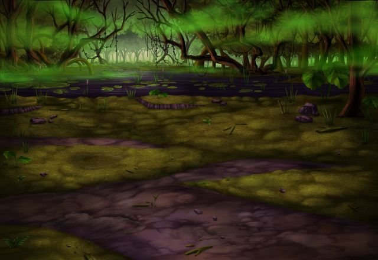

ルジーナ
クソッ！ 毒沼だらけでまともに歩けやしねー！
ルジーナ
ったく何で俺がこんな場所で 魔神を探さなくちゃならねーんだ！
パリス
オーン様の指示なんだから 仕方がないでしょう。
ルジーナ
ハン、これだから元インペリアルガードの お嬢様はお上品だってんだよ！
ルジーナ
アイツらの言うことをまともに聞いてたら 何回ぶっ壊されてるかわからねーぞ！
セリア
へー、ルジーナ優しいじゃない。 オーン様の怖さを教えてあげるなんて。
ルジーナ
この女がオーンのことをまともに聞いてたら 俺も巻き込まれるだろうが！
パリス
……一応、助言としてありがたく 受け取っておくわ。
パリス
確かにオーン様は私の想像を遥かに 越えた方だったから……。
セリア
パリス、とりあえずこれだけは 言っておくわ。
セリア
オーン様は言ったことを必ず実行する。 だから、何か言われる前に逃げるの。
セリア
Shou-chan！ アンタも覚えておくのよ！
セリア
まあ、アンタは放っておいても オーン様には巻き込まれてそうだから
パリス
フフッ、Shou-chanはオーン様にも 期待されているのかしらね。
ルジーナ
とりあえず今はあのデカい花を目指してるが
ルジーナ
何も無かった場合はここを全部回るハメに なるかもしれねーんだからな。
ルジーナ
それに今回は急がないと 面倒なことになるだろうが。
セリア
ええ、そうね。 カルのことも気になるし……。
パリス
オーン様の件でドタバタしてしまって いたけど、その問題もあるわね……。
ルジーナ
何度も言わせるな。 ヤツのことは気にしても仕方がねー。
セリア
Shou-chan！ アンタはしっかり考えなさいよ！
セリア
カルに親友って言われてる 仲なんだから……。
ルジーナ
その内、オーンがお前らのケツを 引っ叩いてくれるだろうよ！
パリス
セリア、Shou-chan、 私たちも行きましょう。
パリス
ルジーナの発言は気に入らないけど やっぱり今は魔神を倒すことが先決よ。
パリス
それに、グラデンス様もきっと動いて らっしゃるはずだろうから。